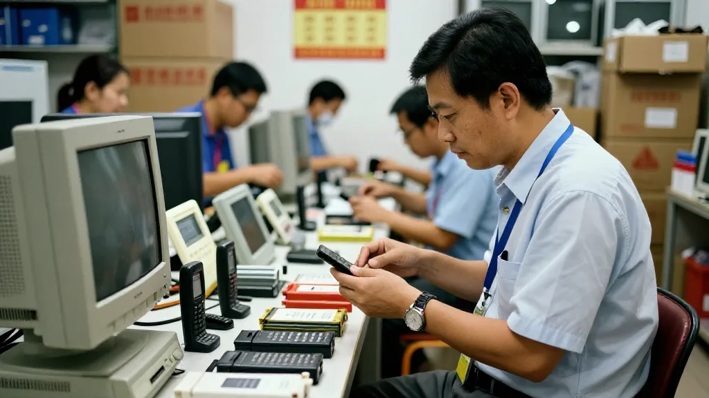
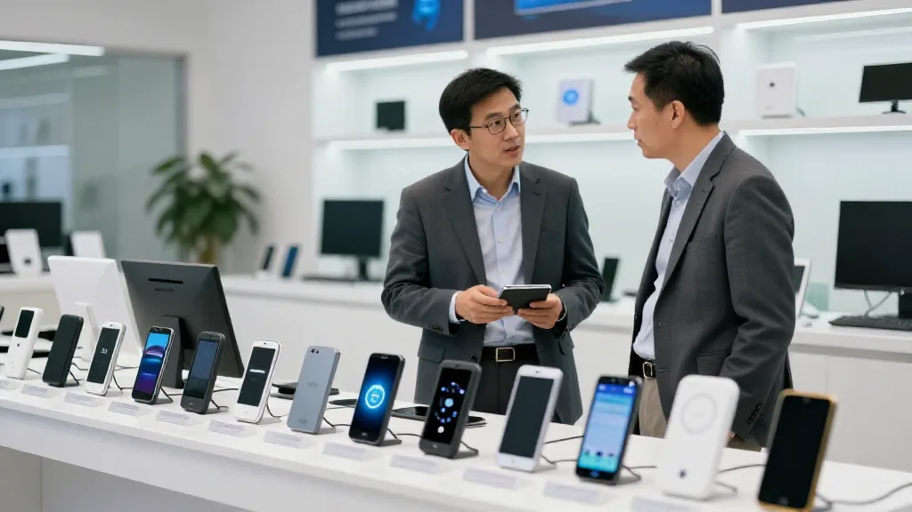
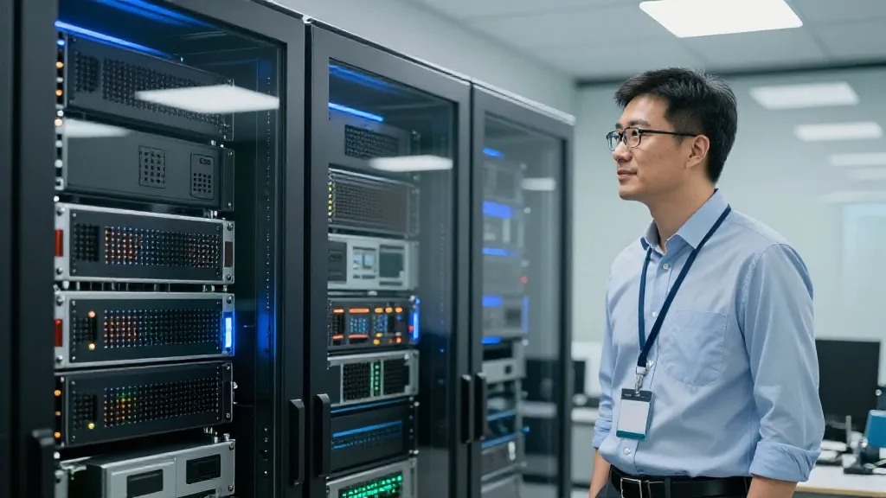

引子：上帝视角下的反差
如果有一日，你企喺云端之上，低头望住一座山嘅腰，你会睇到啲咩？
我最近睇到一张航拍图，唔系边个大师嘅作品，可能只系一个普通游客随手撳落嘅无人机镜头。但就咁一张相，胜过千言万语。
画面入面，一座山被劈成两半。左边灰扑扑嘅铁皮屋顶参差不齐，蓝绿色嘅防水帆布喺风中打皱，混凝土挡土墙层层叠起托住低矮嘅砖房。右边米白色嘅独栋别墅错落喺山坡上，落地玻璃窗反射住天光，屋顶同露台装住深蓝色嘅太阳能光伏板。中间一道浓绿嘅森林缓冲带，将两个世界清清楚楚分隔开。
一墙之隔，天壤之别
睇住呢张相，我谂起咗好多嘢。两边实际距离好近，可能行路唔使五分钟。但视觉上、心理上、生活质素上嘅距离，差咗可能一辈子。
左边屋顶嘅水箱系储水嘅，因为供水唔稳定；右边屋顶嘅太阳能板系发电嘅，因为电费贵，但环保更重要。一种系「求温饱」，一种系「讲生活」。左边好似停留喺上世纪七八十年代，右边充满现代设计语言，两边只隔住一道山坡，但时间差可能成几十年。

圖片由 AI輔助創作（Z-Image-Turbo）
1998年，我由电子产品入行
1998年我开始做贸易嘅时候，深圳仲系一个边陲小镇，到处都系工地同铁皮屋。
嗰阵主流手机系诺基亚，电池唔耐用。我哋有客户自己组装外置电池，卖去外蒙古、俄罗斯远东，因为那边冬天零下30度，原装电池根本顶唔顺。我嗰时就谂，呢种极端场景嘅产品，永远有人要。
一件产品嘅价值，唔系科技有几高，而系能唔能够喺一个边缘场景，解决正路方案解决唔到嘅问题。呢个谂法，一直跟住我做到而家。

圖片由 AI輔助創作（Z-Image-Turbo）
由手表手机，到家电同跨境电商
2005年，我哋做出全球首款手表手机；2006年有四频老人机；2008年推广手机无线充电；2010年制作力距传感电机。嗰阵我哋相信，产品唔需要等巨头点头，中小团队一样可以由零做到有。
后来我做埋家电、服装、珠宝同教育培训，再由传统外贸走到TikTok、Amazon、阿里巴巴、独立站。每一次换赛道，都好似由山嘅一边搬去另一边，身边嘅人同风景全部换晒，但做生意嘅本质冇变：睇住用家真正嘅痛点，交货要准时，质量唔可以甩。
圖片由 AI輔助創作（Z-Image-Turbo）
住埋但唔相识，产品都一样
我曾经喺香港行过大澳、荔枝窝同深井，传统渔村被豪宅包围，原住民同新富阶层住得好近，但烦恼同希望几乎冇交集。航拍图里面嗰片森林，好似命运画低嘅界线。
电子产品都一样。同一条街，有人仲用紧功能机省电省钱，有人已经用AI手机处理成份工作。大家喺同一个时代，但过紧唔同嘅产品人生。做产品嘅人，如果只系睇住山顶嘅别墅，就会忘记山脚仲有好多人等紧一部平、靓、正解决到问题嘅设备。

圖片由 AI輔助創作（Z-Image-Turbo）
而家我搞AI算力，答案冇变
而家我搞七善门科技同星辰算力，帮企业部署AI基础设施。有人问我，由卖电子产品跳去AI，会唔会断层？我说唔会。以前系帮客户将硬件由工厂送到用户手上，而家系帮客户将算力由机房送到业务里面，中间都系同一件事：唔好只讲参数，要解决最后一公里。
航拍图最下方，我留意到一抹红色，似系一部巴士嘅顶部，停喺山路尽头。呢部红色巴士，可能就系连接两个世界嘅工具。我谂，所谓社会进步，可能就系睇呢部巴士班次够唔够密，票价贵唔贵，有冇人坐得起。
每一次城市化都系一次筛选，每一次产品换代都系一次筛选。留下嘅享受红利，离开嘅带着故事。唔好遗忘另一边，多行一步，谂清楚自己拥有嘅有几多系时代馈赠。感恩唔系姿态，而系必须。
Prologue: the contrast from a god's-eye view
If one day you stood above the clouds and looked down at the waist of a hill, what would you see?
I recently came across an aerial photo. Not the work of some master photographer — probably just a drone shot an ordinary tourist clicked off without thinking. And yet that one photo says more than a thousand words.
In the frame, a hill is split in two. On the left, grey corrugated iron roofs at uneven heights, blue-green tarpaulins wrinkling in the wind, concrete retaining walls stacked layer on layer to hold up low brick houses. On the right, off-white detached villas step down the slope, floor-to-ceiling glass reflecting the sky, dark blue solar panels fitted to roofs and terraces. Between them, a thick green band of forest draws a clean line between the two worlds.
One wall apart, worlds apart
Looking at that photo, a lot went through my mind. The two sides are physically very close — probably less than a five-minute walk. But the distance in appearance, in mindset and in quality of life is maybe a whole lifetime.
The water tanks on the left roofs are for storing water, because the supply is unreliable. The solar panels on the right roofs are for generating electricity, because power is expensive but the environment matters more. One side is "getting enough to eat", the other is "talking about how to live". The left looks like it stopped in the 1970s or 80s, the right is full of modern design language, and only a hillside separates them — but the time gap could be decades.
In 1998 I entered the trade through electronics
When I started doing trade in 1998, Shenzhen was still a frontier town, construction sites and tin shacks everywhere.
Nokia was the mainstream phone then, and the batteries did not last. We had customers who assembled their own external battery packs and sold them into Outer Mongolia and the Russian Far East, because winter there goes to minus 30 and the original batteries simply could not take it. Even then I thought: products for extreme situations will always have buyers.
The value of a product is not how advanced the technology is. It is whether it can solve, in an edge-case situation, a problem the proper solution cannot solve. That idea has stayed with me ever since.
From watch phones to home appliances and cross-border e-commerce
In 2005 we made the world's first watch phone; in 2006, a quad-band phone for elderly users; in 2008 we promoted wireless charging for phones; in 2010 we built a torque-sensing motor. Back then we believed a product did not need a giant's nod — a small team could go from nothing to something just the same.
Later I added home appliances, clothing, jewellery and education and training, and then moved from traditional foreign trade into TikTok, Amazon, Alibaba and my own direct-to-consumer site. Every time I changed lanes it felt like moving from one side of the hill to the other: the people around me and the scenery all changed, but the essence of doing business did not. Watch the user's real pain point, deliver on time, and never let quality slip.
Living side by side without knowing each other — products are the same
I have walked Tai O, Lai Chi Wo and Sham Tseng in Hong Kong, where traditional fishing villages are surrounded by luxury houses. The original villagers and the newly rich live very close together, but their worries and their hopes barely overlap. That strip of forest in the aerial photo looks like a boundary line drawn by fate.
Electronics are the same. On the same street, some people still use a feature phone to save power and money, while others already run a whole day's work off an AI phone. We are in the same era but living different product lives. If the people who make products only look at the villas on the hilltop, they will forget that plenty of people at the foot of the hill are still waiting for a device that is cheap, good-looking and actually solves the problem.
Now I do AI compute, and the answer has not changed
These days I run Qishanmen Tech and Star Compute, helping companies deploy AI infrastructure. People ask me whether jumping from selling electronics to AI is a break in the line. I say no. Before, I helped customers get hardware from the factory into users' hands; now I help customers get compute from the data centre into their business. It is the same job in the middle: don't just talk specs, solve the last mile.
At the very bottom of the aerial photo I noticed a patch of red, like the roof of a bus stopped at the end of the hill road. That red bus may well be the tool connecting the two worlds. I think what we call social progress may just come down to whether that bus runs often enough, whether the fare is expensive, and whether people can afford to get on.
Every wave of urbanisation is a screening, and every product generation is a screening too. Those who stay enjoy the dividend; those who leave carry the story. Don't forget the other side. Walk one extra step and think clearly about how much of what you have is a gift of the times. Gratitude is not a pose. It is a necessity.